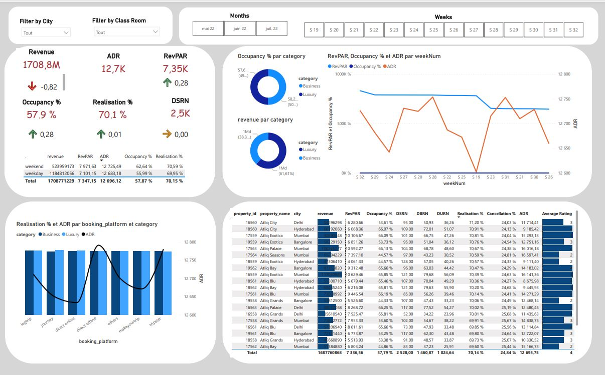
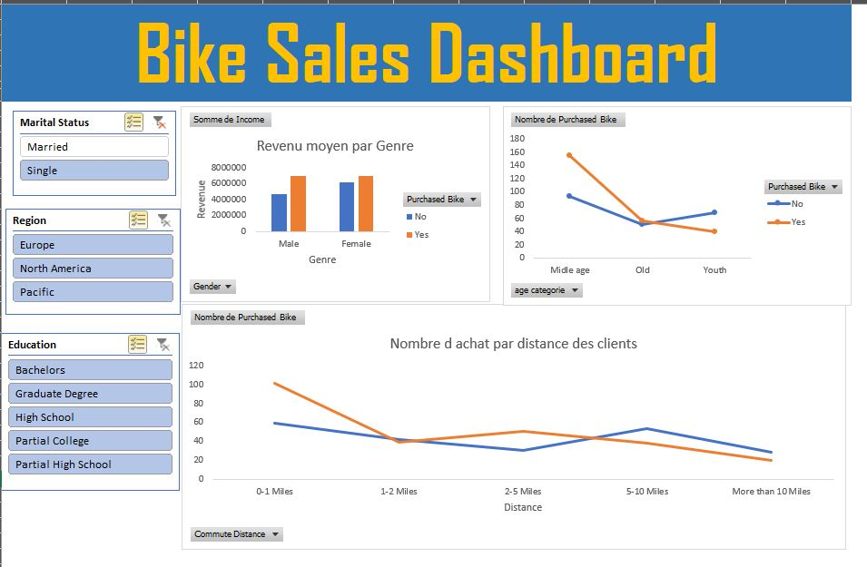

Ce qui fait la particularité de ce projet, c'est qu'il m'a permis de mettre de mettre en évidence l'importance
de comprendre le domaine d'étude. Les données ont été scrappé sur le site ESPNcricinfo. J'ai ensuite entrepris de
bien comprendre le cricket, un sport qui m'était inconnu pour enfin construire un dashboard qui affiche les
performances de individuelles et collectives des joueurs afin d'en choisir les 11 meilleurs et constituer
ainsi la meilleure équipe de cricket de la planète.

Un Projet Power BI complet. Les données proviennent de l'industrie Hôtelière. Après avoir définit des métrics spécifiques
à ce domaine, j'ai réalisé un Dashboard qui capture au moins 4 niveaux d'analyse et repond aux questions les plus pertinentes de ce business.

Un projets complet dans lequel j'ai utilisé les données de vente de Atlic Hardware pour généré un dashboard avec power BI après
avoir définit les objectifs, les parties prenantes et les critères de succès avec l'outils Aims Grid. J'ai également procédé à un nettoyage des donnée dans power query.

J'ai réalisé ce Dashboard a partir de données de ventes de vélos. J'ai effectué l'Analyse exploratoire des données
Dans Excel y compris le nettoyage des données et la construction de tableaux croisées dynamiques.
Le Dashboad contient également des filtres sur les différentes régions de vente et les produits. Excel peut aussi
être utilisé comme un outil BI et ce projet en est la démonstration.

Un dashboard construit à partir de données collectées grâce à un questionnaire sur differents professionnels de la Data. Il affiche les differents postes occupés, diverses regions, le salaire moyen de chacun, les langages de programmation préférés, et l'équilibre entre le salaire et la joie de travailler dans ce secteur.